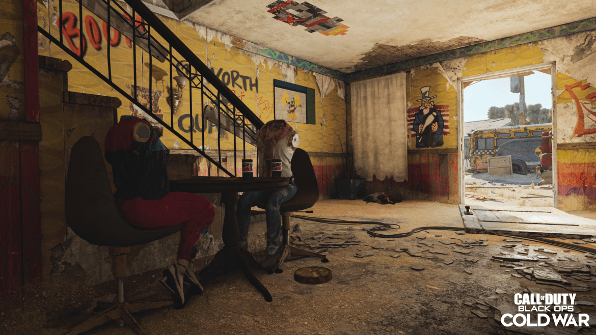

Veterans of the franchise know Nuketown well, but in 1984, it turns out the original testing ground for the most powerful bomb on the planet had a sister site: one that has been lost to time until a few curious travelers turned it into their own. personal sanctuary.
As a precursor to the start of Season One of Black Ops Cold War, Nuketown ’84 is now available for all players for free, continuing the tradition of bringing one of Call of Duty’s most iconic Multiplayer locales into the 6v6 map rotation.
Whether you’re a veteran to these hallowed grounds or a fresh-faced recruit, here’s what you need to know about Nuketown ’84:
Lay of the Land
Nuketown ’84 is a fast and frenetic 6v6 map set in a nuclear testing ground modeled on an idyllic American neighborhood.
Although the layout may look familiar to fans of the original Black Ops iteration of Nuketown, this particular location in the Nevada desert has been designated “Site B.” In 1954, Site B was primed for “the big test,” but a last-minute government budget decision decommissioned the site. For 30 years, this Nuketown remained dormant… until in 1984, a group of social misfits travelling through no man’s land discovered the site and made it their home. Decorating the site with graffiti and various junk collected in their travels, they turned this quaint cul-de-sac into a personal desert refuge from a world filled with wars, anxiety, and “The Man.”
The map’s primary feature is the two iconic model homes facing one another on opposite ends of the cul-de-sac: a teal one on the west, which has the iconic Nuketown sign out front, and a yellow one to the east.
Outside of their faded paintjobs superimposed with graffiti, each home has a spacious living room to welcome you in through the front door. Follow the staircase up to the second level or pass through the kitchen in the rear, which has an exit out to the backyard and another to open attached garage with an alternate route out to the back.
Take the staircase, and you’ll find yourself on a landing looking into the remains of a study room, which leads to a bedroom looking out over the cul-de-sac and a rear balcony with a staircase down to the back lawn. In each home’s backyard, you’ll find what was once the garden area, which acts as the initial spawn point in team game modes, as well as a small shed that can be used as cover. Long-time Nuketown fans will feel right at home.
A graffiti-laden school bus and a delivery truck with an open cargo hold occupy the otherwise open street at the center of the map. At the end of the cul-de-sac to the north is a rust bucket parked on the lawn of a third home with crates stacked towards the direction of the yellow house. Opposite this home, past the bus and truck, you’ll find a 4x4 among sandbags with a small bit of tarmac before the closed-off entrance.
Watch the nuketown trailer here:
Nuketown '84 Minimap
Basic Strategies
Success in Nuketown ‘84 relies on aggressive tactical play and a strong sense of map awareness. In game modes where respawning is enabled, always keep an eye out for where the enemy is coming from to know when to push forward or take cover behind your current position.
In either house, SMGs, shotguns, and melee weapons will serve you well. The garages offer a more secluded point of attack toward enemies in the middle, with an easy escape in the front or back when you need to get out fast.
Assault and tactical rifles perform well in the middle and in the backyards where mid-range sightlines dominate. They’re also excellent for firing out of either house, though you may struggle without a strong close-range backup when an enemy charges up the stairs for revenge.
Other points of interest include the long sightlines along the sides of the map and around the 4x4, where you can position near the vehicle for cover, and take out enemies pouring in from the immediate left and right paths as well as those coming down the center.
Scorestreak Field Guide
On a small map with this much exterior space, plenty of Scorestreaks can be deadly in the hands of a capable Operator.
Just starting out? You can’t go wrong with the RC-XD, Spy Plane, and Counter Spy Plane. Played at the right time, the RC-XD can land multi-kills on clustered groups of enemies. As for the Spy Plane, thanks to Nuketown ’84’s small size, that extra intel can give your team the advantage in overall map awareness. That advantage only grows when you deploy the Counter Spy Plane, which scrambles enemy mini-maps and disables enemy SAM Turrets.
For mid-range streaks, a Sentry Turret placed to the side of either house could help you land a handful of kills down the middle of the map. As for higher-end Scorestreaks, such as the Chopper Gunner, remember to check each home’s garden area for launcher-toting enemies hanging back to clear the skies.
In Domination, the A and C zones sit in the teal and yellow home’s back yards, respectively, with the B zone close to the sedan at top center.
Given B’s position, it’ll usually be under a constant barrage of lethal grenades, so consider equipping Flak Jacket and, using the Law Breaker Wildcard and Tactical Mask simultaneously to mitigate their effects. You could also throw in a Trophy System Field Upgrade for even more protection in your loadouts. In general, the more you can resist or intercept incoming explosives, the better you can hold down that objective.
Hardpoint can turn Nuketown ’84 into pure chaos, as both teams will be focused on a singular point of an already compact map. The same Perk tips apply here as in Domination, with the addition that short-range weapons are highly effective at breaking and holding Hardpoints in either home.
On the flipside, Search and Destroy drastically changes pace, as more methodical plays will be more effective due to a lack of respawns. Be careful of snipers that may lock down the side yards or hole up in one of the bedroom windows, as they could easily give their team an early advantage with a speedy elimination.

10 Tips
10. Trouble in CQB Paradise. While it may be tempting to equip an SMG and a shotgun to get up-close and personal with the enemy match after match, the rifle categories and LMG have their own advantages. Maintain your distance from Operators using close-range weapons who dare to travel into mid-map, or aim into either house where they are poised to dominate any intruders.
9. Fire from the Hip. On a map where you’ll often suddenly find yourself face to face with an enemy, it may be better to configure weapons for better hip fire accuracy. That way, you’ll have a chance at landing the initial panic shot before finishing the job by aiming down sights.
8. Bring a Launcher. The fencing behind either house offers a mostly-safe haven from which to attack aerial Scorestreaks. Equip a launcher and help your team — and your Scorestreak progress — by taking down enemy threats. Expect a lot of them.
7. The RC-XD: A Hidden Gem. Given the limited amount of space on Nuketown ’84, this low-end Scorestreak could be an invaluable tool for turning the tide of battle. Expert drivers may even find a way to get this remote-controlled car across the map quickly safely and deal a devastating surprise attack.
6. SAM Turret Deployed. If you’d like to support your team without taking your eyes off the field, consider the SAM Turret field upgrade. It’s not as consistent as a launcher, but it can do a lot of work against enemy aerial Scorestreaks in the time it’s out.
5. Grenades Aplenty. Equipment of all shapes and sizes should be used freely on Nuketown ’84. Even Smoke Grenades can be used to great effect, concealing your movement through the middle when you need to rush across the map.
4. Don’t Forget Your Mask and Jacket. No matter if you are aiming for weapon kills or lobbing plenty of lethals yourself, the Flak Jacket and Tactical Mask Perks are near essentials when infiltrating Nuketown ’84. Leave them off your loadouts at your own risk of an explosive death or frequent disorientation.
3. Hit the Deck! On such a small and frenetic map, there are bound to be a handful of players using Proximity Mines in hopes of landing kills against unsuspecting enemies. If you ever set one off, crouch to avoid taking lethal damage.
2. On the Ledge. There’s a small ledge protruding just under the second story window of either house. This can be used to get a better angle at action happening at mid-map, or you can climb up from the outside as another way to counter a bedroom sniper.
1. Speed is King. Nuketown ’84 is built for aggressive play. If you’re generally a more cautious player, this is the map to get out of your comfort zone. Keep pushing to tip the balance until you see how aggressive play can be the best defense of all.
Execute the mission.